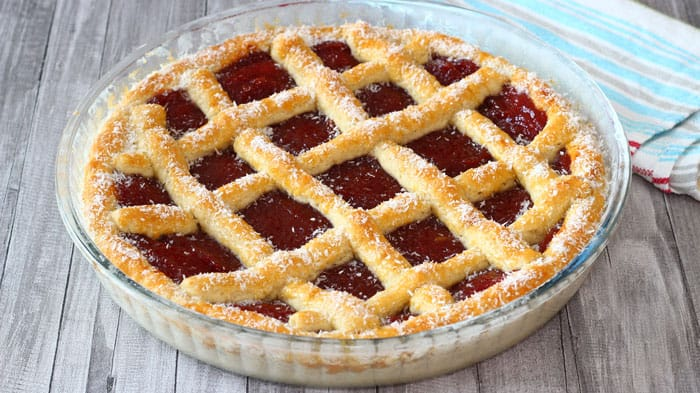

Pastafrola

Description
Ingredients
For the crush:
- 1 cup cornstarch
- 3 cups self rising flour
- 2 teaspoon baking powder
- ¾ cup granulated sugar
- 7 oz unsalted butter, cold and cut into cubes
- 2 lemons, the zest
- 2 teaspoon vanilla extract
- 3 large eggs
For the filling:
- 1.1lb quince cheese (firm jam) cut into cubes
- 3 tablespoon orange cognac (or juice/water)
Others:
- 1 egg yolk for brushing
- 1 tablespoon any jam or honey for brushing
- some desiccated coconut to sprinkle on top
Steps
The crust:
- Sift corn starch, self rising flour and baking powder into a bowl. Add in sugar and mix well.
- Now add in cold butter and massage it into the flour with the tips of your fingers until the mixture becomes sand-like. Add in the rest of the ingredients and mix well using a spatula until everything is coming together.
- Pour into a floured working surface and lightly knead with your hands to bring everything together into a ball. Don't over knead.
- Place it back into the bowl, cover with cling film and chill in the fridge for 30 minutes. Meanwhile we proceed with the filling.
The filling:
- Add quince cubes and orange juice into a pot. Cook on low heat until the cubes melt and becomes a thick paste. Cool completly before using.
Assembling:
- Place ¾ of dough in between 2 cling films and roll it into 13 inch disk. Remove the top film and sprinkle some flour on the dough.
- Swiftly yet confidently flip it into a 12 inch glass container that has been buttered and floured. Re-adjust the dough as you need and remove the film. Trim the edges so that it's ½ inch tall, more or less. Set aside to chill in the fridge.
- Use the remaining dough to make 8 lattice. Roll on floured surface for better handling. Chill in the fridge for a while if the dough is too soft to handle.
- Pour cooled quince paste into the container and spread evenly. Arrange the lattice on top. Brush the dough with egg yolk.
- Bake in a preheated oven on the lowest rack at 340°F for 45 minutes or until the top is golden brown. Remove from the oven and while still hot, brush some jam on the pastry. Finally sprinkle some desiccated coconut on the pastry. Cool completly before slicing.